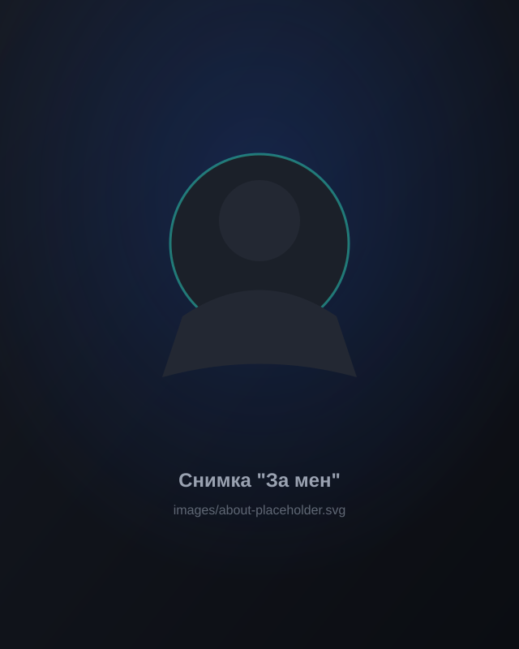

Няколко думи за мен
Консултативен психолог по образование. Интересувам се от хората — начина, по който мислим, чувстваме и общуваме, и от причините зад поведението ни. Работата ми с хора ме научи да слушам внимателно, да задавам въпроси и да търся смисъла зад думите: вярвам, че добрият разговор започва с внимание, доверие и истински интерес към отсрещния.
Извън психологията ме вълнуват технологиите, спортът и криминалните истории — обичам да наблюдавам детайлите и да свързвам информация. Създадох това пространство, за да споделям идеи и гледни точки за психологията и човешкото поведение. Ако нещо тук те заинтригува, преминаваш през труден период или искаш да разбереш себе си по-добре — пиши ми, нека поговорим.
- Живее вБългария
- Пише запсихология и човешко поведение
- Обичаспорт и криминални истории
- В моментаконсултативен психолог по образование
Последни статии
Директно от repository-то — качваш нова статия в GitHub и тя се появява тук автоматично.
Зареждане на статиите…
Да се свържем
Ако искаш да обсъдим нещо от блога или просто да си кажем здравей — пиши ми.